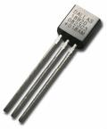
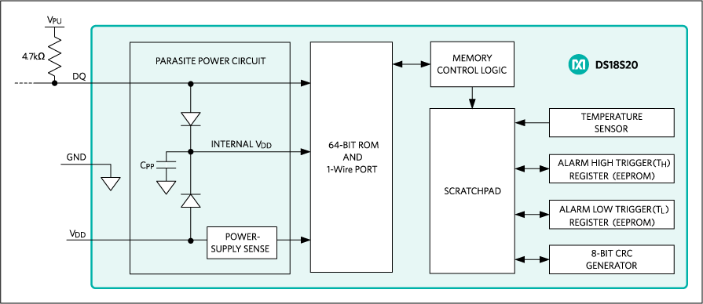
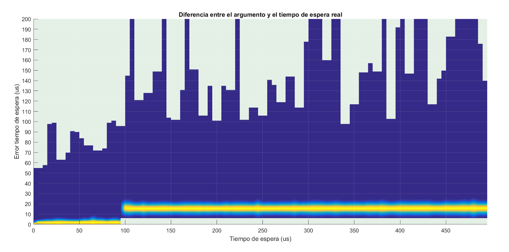
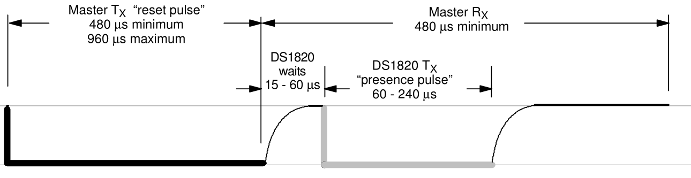
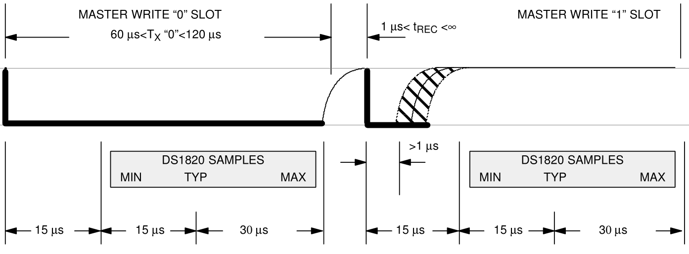
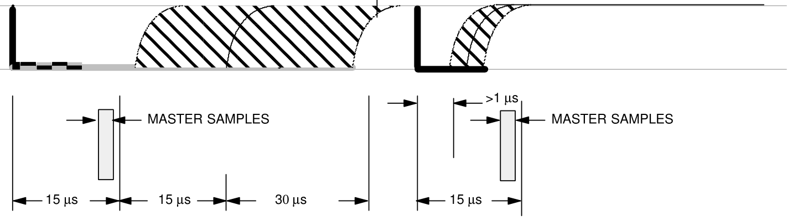
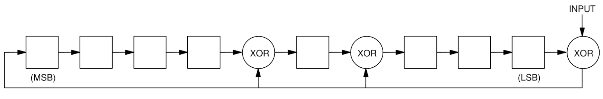
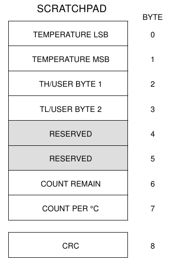

En la entrada anterior vimos cómo manejar de forma básica la conexión GPIO de una Raspberry Pi 3. En esta nos comunicaremos con un sensor digital modelo DS1820, sin utilizar ningún driver ni librería, es decir implementando a bajo nivel el protocolo 1-Wire empleado por el dispositivo.
|  |
| Sensor digital de temperatura DS18B20. |
{kind=link}
Lo he escogido para esta entrada porque necesitaba medir temperaturas con cierta precisión. Además me ha parecido un ejercicio digno de compartir, que entraña sutilezas técnicas de distinto tipo.
Esquema de bloques
El sensor que vais a encontrar más fácilmente es el ds18s20. Es el sucesor del ds1820 ya descatalogado y es totalmente compatible en patillaje y protocolo. El segundo más habitual es el ds18b20, un modelo ligeramente más avanzado que permite escoger la resolución entre 9 y 12 bits. Es compatible en patillaje pero algunos comandos son diferentes.
Por último, también tenéis a la venta la versión más barata ds1822. Se trata de un modelo económico con mayor margen de error. Si los anteriores tienen un error de más/menos 0.5ºC, en este puede llegar hasta los 2ºC.
|  |
| Esquema de bloques del DS18S20. Maxim integrated. |
{kind=link}
En la imagen superior está esquematizado el funcionamiento del sensor. Veamos primero cómo funciona el bloque más a la derecha, el llamado Temperature Sensor.
Los chips de la familia ds1820 tienen un oscilador cuya frecuencia no depende de la temperatura, es fija. Dicho oscilador actúa como reloj interno y genera pulsos a un ritmo constante. Luego tienen otro oscilador cuya frecuencia sí depende de la temperatura. Mientras el primero genera pulsos a su ritmo, este último determina el tiempo de medición.
De esta forma contando cuantos pulsos ha generado el primero se puede saber durante cuanto tiempo ha estado abierto el segundo, así es como se calcula la temperatura.
Bajo este bloque tenemos dos bloques más simbolizando las alarmas programables. Se puede indicar un límite superior e inferior para los cuales el DS1820 responderá a un comando especial. Esta característica se denomina alarma de temperatura. Es muy útil para buscar rápidamente entre muchos sensores si alguno ha excedido los límites sin tener que leerlos todos uno por uno.
Más abajo está el generador de CRC, hablaremos del CRC más adelante.
A su izquierda está el bloque llamado scratchpad. Es un registro que podemos leer y escribir por comandos. Lo usaremos para leer la temperatura. Este registro se comunica mediante la lógica de control con la ROM y el puerto 1-Wire.
La ROM es una memoria de sólo lectura donde está el número de serie del dispositivo. En cualquier bus donde hay más de un receptor conectado, se necesita una forma de identificar al destinatario. En un bus SPI tenemos una línea dedicada Slave Select. En un I2C tenemos un código mitad fijo, mitad personalizado. Los dispositivos 1-Wire tienen un número de serie de 64bit que los identifica por si hubiera varios sensores conectados al mismo bus.
El formato del número de serie es como sigue:
- Identificador de la familia: siempre será 10h para DS1820 y DS18S20. 28h para DS18B20 y 22h para el DS1822. Este código nos dice el tipo de chip conectado, podrían ser sensores, números de serie digitales, interruptores, memorias, etc.
- Número de serie propiamente dicho, 48 bit. Con 48 bits hay espacio para 1014 identificadores diferentes por lo que la probabilidad de colisión es mínima.
- Finalmente un byte de CRC. Cuando se transmiten datos a menudo algún bit se pierde por el camino o se invierte. Un CRC es el resultado de una operación matemática que se aplica en el emisor con todos los bits anteriores. Luego la reproduce el receptor para comprobar si el mensaje ha llegado con alteraciones. Más abajo lo explicaremos con detalle.
A la hora de lanzar un comando podemos hacerlo indicando el identificador al que va dirigido. También hay un comando especial que omite la dirección y selecciona todos los esclavos conectados. Como a priori no sabemos los códigos, hay un algoritmo para que el maestro descubra los identificadores de los esclavos conectados al bus. Sin embargo, como para este artículo emplearemos un sólo sensor no será necesario.
El último bloque es la fuente de energía parásita. Cada chip 1-wire tiene un condensador que se carga a través del positivo de alimentación si está conectado. Si no está conectado el positivo, entonces se carga mediante la linea de datos cuando está en nivel alto. El bus 1wire es de colector abierto con resistencias de pull-up, por tanto la línea de datos está a nivel alto la mayor parte del tiempo. Cuando el bus pasa a nivel bajo el chip se alimenta de la carga almacenada por el condensador.
En cierto modo me recuerda un poco a los chips RFID en esta forma de extraer energía del propio lector. Como consecuencia el positivo de alimentación es opcional. Junto a la masa común, tan sólo necesitan un cable para alimentación y datos. De ahí el término 1-Wire.
Ahora quisiera contaros algo de su "lado oscuro". Gracias a su bajo coste, pequeño tamaño y número de serie propio, se utilizan muchísimo para la identificación de piezas originales. Por ejemplo en los adaptadores de tensión de portátiles.
Teardown and exploration of Apple's Magsafe connector. Dentro del conector MagSafe de un Mac hay un chip 1Wire modelo DS2413, un doble interruptor capaz de controlar hasta 20mA. Es barato y muy práctico para encender y apagar el LED del conector. Pero la misma tecnología resulta igual de práctica para rechazar cargadores no originales.
Es el caso de los cargadores para portátiles Dell, Inside the DELL AC Power Adapter - A mystery revealed. Cada cargador Dell tiene un chip DS2501 (o DS2502). Se trata de memorias EPROM. Es decir, memorias que se pueden escribir pero no se pueden borrar. El fabricante guarda ahí los datos referidos al adaptador: la tensión, el tipo de cargador, o la potencia máxima sobre todo. El portátil lee dichos datos y determina si es compatible o no. Si no es compatible interrumpe la carga por precaución. De ahí que sólo se puedan usar cargadores originales.
Y sucede lo mismo con las baterías. El integrado DS2438 es un monitor inteligente de baterías. Controla el nivel de carga, la corriente consumida o la temperatura. Adicionalmente dispone de una EEPROM de 40 bytes donde el fabricante escribe el tipo de batería, fabricante, número de serie, fecha de fabricación, etc. Por un lado es perfecto para controlar en todo momento el estado de la batería y prevenir accidentes, pero por otro lado hace que el dispositivo sólo funcione con baterías originales.
El protocolo 1-Wire
Hay dos tipos de bus serie: los que tienen una linea de reloj dedicada y los que no.
Como ejemplo del primer tipo tenemos los buses SPI o I2C, con una linea de datos y otra independiente para sincronización. La ventaja es que la transmisión es más simple, más rápida y más fiable. Pero necesitamos un cable extra para el reloj.
Necesitar un hilo más no parece un gran problema para la comunicación Entre Circuitos Integrados (I2C), o para los Periféricos Serie (SPI). Pero... ¿y si sólo tuviéramos un canal y no hubiera forma de tener una señal de reloj paralela? Tal es el caso de un mando a distancia infrarrojo, una antena, un telégrafo, un CDROM, un cable telefónico o una banda magnética.
Imaginad que para transmitir un 1 damos tensión a la línea durante un tiempo y para el 0 la quitamos. Ahora imaginad que transmitimos muchos 0 seguidos. El receptor no tiene forma de saber si le están transmitiendo 0 todo el rato, si han apagado el receptor, o si se ha cortado el cable.
Para evitarlo, en lugar de "tensión para 1, no tensión para el cero" se puede recurrir a invertir el voltaje. Por ejemplo 12V para 0 y -12V para el uno. Se llama codificación bipolar.
Aún así queda otro problema. Cuando se transmite mucho tiempo el mismo estado. Como el reloj del transmisor y del receptor no son perfectos cada uno tendrá una deriva diferente. Al cabo del tiempo la desincronización habrá llegado a la duración de un bit y se habrá perdido la cuenta de cuántos van. Esta condición se llama bit-slipping y es propia de las codificaciones Non Return to Zero.
La mejor forma de solucionarlo es haciendo que la linea cambie de cuando en cuando siguiendo un patrón para que el receptor pueda ajustar su reloj y no se pierda. Hay codificaciones que en cada bit, sea cual sea su valor, cambian una vez. Estas codificaciones reciben el nombre de Self clocking porque reúnen los datos y el reloj en la misma señal.
El protocolo 1 Wire está diseñado teniendo en cuenta lo anterior, y además para que la linea de datos se mantenga en nivel alto el mayor tiempo posible.
Consiste en una especie de código morse. En reposo la linea se mantiene a nivel alto mediante una resistencia de pull-up. El valor recomendado es 5k. Menos de lo habitual para las resistencias de pull-up. Esta resistencia debe ser baja para cargar el condensador de alimentación como vimos antes. Si la resistencia fuese muy alta, el condensador tardaría mucho en cargarse y sólo se podrían transmitir señales de forma muy lenta para no reiniciar los chips.
De todas formas el tiempo que tarda la linea en recuperarse depende de varios factores; como la resistencia de pull-up, la longitud del cable, el número de dispositivos conectados y si utilizan el positivo para alimentación o el mismo cable de datos.
1-Wire tiene cinco componentes básicos:
Presencia. El máster lleva el bus a nivel bajo durante entre 480 y 600us. El condensador se descarga y como resultado todos los dispositivos conectados se reinician. Acto seguido el máster libera la linea, y esta vuelve a nivel alto. Los esclavos 1-Wire al iniciar esperan un momento y llevan el bus a nivel bajo. Así el máster determina que hay al menos un elemento 1Wire conectado. A esa secuencia se le llama presencia.
| Secuencia de reinicio. En azul el pulso de presencia. |
{kind=link}
Escribir 0 y escribir 1. Es parecido al código morse. Para escribir un dato el máster lleva a cero el bus durante un breve periodo. Si es un poco más de 1us y hasta 15us el receptor interpreta un 1. Si es más largo, 60us, el receptor interpreta un cero.
El mecanismo realmente es más sencillo. Cuando el receptor detecta que la tensión ha caído a 0, espera entre 15 y 45us y vuelve a comprobar la linea. Si para entonces ha vuelto a nivel alto se trata de un 1, si continúa en nivel bajo, entonces se trata de un 0. Tras escribir un bit hay que esperar un tiempo de reposo. Dicho tiempo recibe el nombre de timeslot, y está entre 60 y 120us.
| Escritura por el máster de 1 y 0. |
{kind=link}
Leer 0 y leer 1. Según el diseño del bus 1-Wire, el máster es quien inicia la lectura. Cuando el máster quiere leer transmite un pulso breve, como si fuera a enviar un 1. Espera unos instantes y muestrea. Si el chip quiere transmitir un uno, no hará nada, dejará que la linea suba y el máster al tomar el valor leerá un uno. Si el chip quería transmitir un 0 mantendrá la linea sujeta durante unos 15us. En tal caso cuando el máster vuelva a mirar el valor, leerá cero.
El máster debe muestrear el estado del bus tras el tiempo de recuperación, siempre antes de los 15us, y anotar el valor leído.
| Pulsos de lectura. En azul la reacción del esclavo. |
{kind=link}
Esperar microsegundos
Llevamos unos párrafos hablando de microsegundos. ¿Hasta qué punto es viable hacer esperas tan cortas?
Aún en el PIC más básico, funcionando a 4MHz, tenemos una instrucción cada microsegundo. Esperar 10 microsegundos en un microcontrolador es inmediato, serían 10 instrucciones. Esperar 10 microsegundos en un sistema multitarea como una Raspberry es imposible. Porque aún ejecutando muchas más instrucciones por segundo, no hay forma de saber cuándo se van a ejecutar, ni si la ejecución va a ser continua o interrumpida.
Vas a acabar esperando 5, 12 o 7us pero no los 10us exactos.
Para eso están los sistemas de Tiempo Real. No os dejéis engañar por el nombre, la característica principal de un sistema Tiempo Real no es su velocidad de respuesta, es que es predecible. Un sistema Tiempo Real puede demorarse 20ms en dar una respuesta. Pero siempre se demorará esos 20ms más o menos. Y no unas veces 10ms y otras veces 500.
Linux, como decíamos, no es así. Es un sistema multitarea donde una actividad tiene un tiempo asignado de CPU. Dicho tiempo se interrumpe varios miles de veces por segundo para ejecutar otras tareas con mayor o menor prioridad. Lo más que nos pueden garantizar las funciones de espera es no continuar hasta haber transcurrido al menos el tiempo deseado. Pero puede ser más, y casi siempre suele ser más.
El protocolo 1wire tiene unas especificaciones de tiempo concisas. Como el programa lo vamos a hacer en C, apoyándonos en la librería WiringPi, nos fijamos en la función delayMicroseconds. Esta función espera un determinado número de microsegundos antes de continuar la ejecución.
Como ya sabemos que siempre va a esperar más de la cuenta, vamos a hacer un pequeño programa que haga miles de llamadas de espera y cronometre el tiempo transcurrido en realidad. Hemos medido el tiempo de espera para valores entre 0 y 300us en 100000 iteraciones.
t min avg max var
0 0 0.88 69 0.41
50 0 1.92 298 10.79
100 38 68.83 9691 1605.88
150 32 68.55 3208 341.54
200 32 68.90 13989 3197.04
250 33 69.00 8561 1488.61
300 24 69.07 10294 1967.54
Aquí t es el tiempo de espera solicitado en us, el argumento de la función si queréis. Los demás valores se refieren al exceso de tiempo esperado respecto a t. O sea, si pido esperar 100 y acabo esperando 138, el error es 38us.
min es el error más pequeño de todas las iteraciones para un tiempo dado. avg la media de los errores. max es el máximo exceso que hemos medido y var, como podéis intuir, la desviación típica.
Volviendo a leer la tabla, un momento... si pido esperar 200us, podría esperar 232 como poco y hasta más de 14ms en algún caso. ¡Es una incertidumbre altísima! Podríamos resumirlo como "tú pide lo que quieras, y yo esperaré lo que me apetezca".
¿Y si le damos mayor prioridad al programa? Cuando varios programas reclaman el uso de la CPU, el que tiene mayor prioridad recibe una rodaja de tiempo más grande, o más rodajas de tiempo en promedio. Con el comando nice podemos especificar una prioridad mayor.
Pero aquí no hablamos de consumo de CPU, sino de tiempo de espera. Los mayores errores se producen cuando está a punto de terminar el contador pero la tarea se aparca para atender otros programas ligados a la misma CPU. Para cuando la CPU retoma la tarea, el tiempo ya se ha excedido.
Desde aproximadamente el año 2008 Linux incorpora ciertas características imitando a un sistema Real-Time. En concreto, la programación de tareas llamada FIFO consiste en que una tarea no abandona la CPU mientras siga usándola. Este comportamiento puede volver el sistema inestable si un programa adquiere la CPU con prioridad máxima, ya que impedirá que se ejecuten otros programas asignados a la misma CPU. Por eso sólo el administrador puede asignar tal prioridad.
El comando chrt nos permite modificar el programador de tareas, así con chrt -f 99 estamos indicando que queremos el programador Real-Time FIFO con prioridad 99.
Este es el efecto sobre el programa anterior:
t min avg max var
0 0 0.85 45 0.16
50 0 1.73 55 2.19
100 6 15.46 154 7.45
150 6 15.43 96 7.13
200 6 15.42 101 7.39
250 6 15.45 74 6.94
300 6 15.47 122 7.78
La incertidumbre ahora es mucho más baja; y el error máximo al menos es del mismo orden de magnitud. Además, ahora el mejor caso se aproxima mucho más a tiempo de espera real.
La librería WiringPi tiene una función llamada piHiPri (). Funciona igual que si ejecutáramos el comando sudo chrt -r 99. Asigna a la tarea la máxima prioridad asignable por el usuario sólo que, en lugar el programador FIFO, emplea el programador de Tiempo Real RoundRobin, pero el resultado es el mismo.
Aún así hay dos casos bien diferenciados: por encima y por debajo de 100us, fijaos en la media. Para valores por debajo de 100us, en algún caso el error ha sido 0 y el error medio anda entre 1 y 2us de margen. Para valores superiores, en cambio, el mínimo error que podemos esperar es 6us. Es decir, jamás esperaremos exactamente el tiempo previsto, siempre esperaremos como poco 6us más y, en general, 15 o 16us más.
Encontramos la razón mirando el código de WiringPi. Cuando el tiempo de espera es inferior a 100us delayMicroseconds utiliza un bucle para esperar. Esta técnica se llama busy waiting y mantiene el procesador al 100% mientras espera. Para no mantener el procesador al 100% durante más tiempo del necesario, para tiempos mayores de 100us hace uso de la función nanosleep. La cual, como vemos, nos hace esperar en promedio 15us más.
En la siguiente imagen se aprecia mucho mejor el salto. En el eje horizontal están los tiempos de espera solicitados hasta 500us. En el eje vertical el exceso de espera. En color azul los casos comprendidos entre el mínimo y el máximo error. Y en gradiente una distribución normal con la media y la varianza obtenidas. Si bien no tenemos garantía de que la distribución de los errores siga una normal, con una varianza pequeña nos sirve para hacernos una idea.
|  |
| Tiempos esperados con 100.000 iteraciones. Click para ampliar. |
{kind=link}
Podemos forzar la espera en bucle llamando a la función delayMicrosecondsHard. Este es el resultado:
t min avg max var
0 0 0.87 19 0.14
50 0 0.01 17 0.03
100 0 0.01 35 0.04
150 0 0.01 18 0.06
200 0 0.01 22 0.05
250 0 0.01 40 0.05
300 0 0.01 26 0.08
Ya lo veis, un error promedio menor de 1us en todos los casos y un máximo de 40us. Con estos márgenes sí funcionará la comunicación 1-Wire.
Primitivas de 1-Wire
Ahora vamos a usar el bus para transmitir y recibir.
Aunque nosotros lo vamos a hacer desde cero, hay un módulo del kernel que sirve para comunicarse con el ds1820. El procedimiento lo tenéis en multitud de páginas, por ejemplo DS18B20+ One Wire Digital Temperature Sensor and the Raspberry Pi o también Adafruit's Raspberry Pi Lesson 11. DS18B20 Temperature Sensing.
Para elaborar el programa seguiremos un esquema de desarrollo bottom-up, empezando por las funciones más básicas y terminando en la función main.
En esta sección no vamos a entrar en los comandos del protocolo. Nos limitaremos al control eléctrico del bus de datos y a leer y escribir bits.
La primera función se llamará low y sirve para llevar el bus a cero durante un periodo de tiempo dado. Recordad que la linea de datos se encuentra por defecto en nivel alto debido a la resistencia de pull-up.
Para eso definimos la patilla como salida, hasta ahora en estado de alta impedancia (entrada), y escribimos un 0 lógico. A continuación esperamos el tiempo especificado y la volvemos a poner como entrada.
/* Pulls down the bus for given us then releases it */
void low(int pin, int us) {
pinMode (pin, OUTPUT);
digitalWrite (pin, LOW);
delayMicrosecondsHard (us);
pinMode (pin, INPUT);
delayMicrosecondsHard (TREC);
}
Aquí entra en juego un parámetro al que hemos llamado TREC. Significa Tiempo de Recuperación y quiere decir cuánto tarda nuestro bus en recuperarse.
Los dispositivos 1-wire incorporan un condensador cuya capacidad depende del modelo. El tiempo de recuperación va a depender de multitud de factores, como por ejemplo cuántos esclavos hay conectados al mismo bus, la longitud de este, su resistencia y capacitancia, el valor de la resistencia de pull-up o de si empleamos alimentación externa o parásita.
En nuestro caso, el tiempo de recuperación es bajo porque conectamos la alimentación externa. Las resistencias de pullup incorporadas en la Raspberry son de 50kOhm, y lo recomendado es 5kOhm. Por tanto, si no queremos usar componentes externos debemos conectar el pin de alimentación. Hemos definido TREC igual a 2us, por ejemplo.
Lo más fácil de escribir a continuación es la secuencia de presencia. Si recordáis, consiste en retener la linea a 0V durante más de 480us. Según dice el datasheet los dispositivos pueden aguantar sin corriente entre 480 y 960us. Luego 960us es el tiempo que debemos esperar para garantizar que todos los dispositivos se han reiniciado.
A continuación, según vemos en la imagen, los esclavos esperan entre 15 y 60us y ellos mismos llevan la línea a 0V durante un breve tiempo. Suficiente para medirlo sin dificultad.
|  |
| Secuencia de reinicio. Datasheet DS1820. Dallas Semiconductor. |
{kind=link}
Así pues, bajamos el bus durante 960us, esperamos 60 y leemos. Si hemos leído un nivel bajo significa que hay algo conectado (devolveremos 1). De lo contrario no hay nada en el bus (devolveremos 0). En otras palabras, devolvemos lo contrario al valor leído.
Por último damos un tiempo prudencial para que los dispositivos se inicien correctamente según sugiere la imagen. 300us será suficiente.
/* Sends a reset pulse and waits for a presence response */
int reset (int pin) {
int v;
low (pin, 960);
delayMicrosecondsHard (60);
v = digitalRead(pin);
delayMicroseconds(300);
return !v;
}
Lo siguiente será una función para transmitir un bit 0 o 1, la llamaremos send_bit. Tal como habíamos visto, para enviar un cero el máster debe llevar la línea a nivel bajo durante el tiempo que dura un timeslot, entre 60 y 120us.
Para enviar un uno, el máster debe bajar la linea durante un tiempo minúsculo de entre 1 y 5us y luego liberarla hasta el siguiente timeslot, o dejarla así si no va a enviar más datos. En el datasheet recomiendan más de 1us y menos de 15. Como las rutinas de espera siempre esperan más de lo necesario, programamos 2us por ejemplo.
|  |
| Secuencia para escritura. Datasheet DS1820. Dallas Semiconductor. |
{kind=link}
Así es como funciona en la práctica: el chip 1-Wire detecta la bajada de la linea, espera entre 15 y 60us y lee el estado del bus. Si es positivo entiende un 1 y si es negativo entiende 0. Ya está. No olvidéis que si la dejamos en 0 durante mucho tiempo, más de 480us, a los chips se les agota el condensador y se reinician.
TIMESLOT es una variable del programa. No es crítica, en la práctica funciona desde 25us en adelante. El datasheet recomienda un mínimo de 60us y un máximo de 120, nosotros hemos decidido fijarla en 90us.
/* Sends a 0 by pulling the bus for a whole time slot
* Sends a 1 by pulling just a bit 5ms,
* and then releasing it for the rest of time slot */
void send_bit(int pin, int bit) {
if (bit) {
low(pin,2);
delayMicrosecondsHard(TIMESLOT-5);
}
else {
low(pin,TIMESLOT);
}
}
Lo siguiente es leer un bit. Para leer un bit el máster debe llevar la línea a nivel bajo durante más de un microsegundo. El dispositivo detecta la bajada. Cuando el máster libera la línea pueden pasar dos cosas: si el esclavo quiere escribir un 1 libera la línea y vuelve a nivel alto, pero si quiere escribir 0 la retiene en nivel bajo hasta 15us.
|  |
| Secuencia de lectura. Datasheet DS1820. Dallas Semiconductor. |
{kind=link}
Así pues, en esta rutina bajamos el bus durante dos microsegundos, e inmediatamente leemos el valor. Devolvemos el valor leído. La rutina low ya esperaba el tiempo necesario para la recuperación del nivel.
/* Sends a brief pulse and then read for the response */
int read_bit(pin) {
int s;
low(pin, 2);
s = digitalRead(pin);
delayMicrosecondsHard(TIMESLOT);
return s;
}
Una vez que escribimos y leemos bits, es sencillo escribir o leer un byte. Únicamente hay que escribir o leer 8 bits seguidos.
Pero eso sí, prestad atención al orden en que enviamos los bits. Los dispositivos 1-Wire siempre empiezan enviando el bit menos significativo primero. La siguiente función send_byte llama varias veces a send_bit con el valor que tenga el bit menos significativo del byte. Tras haber enviado un bit, desplaza hacia la derecha el valor y repite.
/* Sends 8 bit in a row, LSB first */
void send_byte(int pin, char byte) {
int i;
for (i = 0; i < 8; i++) {
send_bit(pin, byte & 1);
byte = byte >> 1;
}
}
Para leer es algo más complicado, ya que tenemos que empezar a leer por el bit menos significativo. El primer bit leído irá a la derecha del todo. El siguiente irá a su izquierda, y así iremos rellenando los 8 bits hasta componer un byte.
/* Reads a byte, LSB first */
char read_byte(pin) {
int byte = 0;
int i;
for (i=0; i < 8; i++) {
int b;
b = read_bit(pin);
b = b << i;
byte = byte | b;
}
return byte;
}
CRC-8 Maxim/Dallas
Como ya hemos visto el protocolo es crítico en tiempos. ¿Qué pasa si falla? Pues que podemos enviar o recibir datos erróneos. ¿Forma de detectarlo? Hay varias.
La más sencilla, que no se usa aquí, es el bit de paridad. En el caso de una transmisión serie, por ejemplo se usa un bit de paridad para detectar errores. Por si no os habéis parado a pensar cómo funciona, se fuerza a que el número de unos sea par o impar añadiendo un bit a 1 o a 0 según haga falta. Cuando se recibe el byte, se comprueba que el número de unos corresponde a lo acordado y si no, pues ha habido un error.
El bit de paridad, siendo tan básico, sólo permite detectar un número impar de errores. En cuanto se cambien dos bits, ya lo da como correcto. De hecho en transmisión serie es habitual que fallen varios bits seguidos debido alguna interferencia.
En otros ámbitos, sobre todo cuando el mensaje es numérico, se recurre a calcular el resto módulo algún valor. Por ejemplo en el cálculo de la letra del DNI se utiliza el resto módulo 23.
El CRC es una forma de calcular el resto un tanto especial. No voy a explicar el fundamento matemático porque daría para un artículo entero. Pero básicamente funciona con un registro de desplazamiento por el que pasan todos los bits. A medida que se desplazan de un lugar a otro, pueden invertirse o no dependiendo del nuevo bit y del resultado del bit anterior.
|  |
| CRC8 para 1wire. Datasheet DS1820. Dallas Semiconductor. |
{kind=link}
¿Un lío? Sí, precisamente. Se trata de hacer una operación enrevesada con la intención de hacer improbable que una cascada de errores aleatorios dé casualmente el mismo resultado.
La idea es esa, sí. Realmente hay un fundamento matemático muy robusto detrás basado en el álgebra de polinomios. Lo importante aquí son dos cosas:
- Es fácil de implementar. Para el hardware actual, desplazar bits y hacer xor son de las operaciones más baratas y más rápidas.
- Es fácil de comprobar, de hecho no hace falta. Me explico. Por la naturaleza matemática de un CRC, si concatenamos el valor al mensaje original, cuando calculemos el CRC de todo junto va a dar cero. O sea, al recibir un mensaje incluyendo el CRC tan sólo hemos de pasarlo por la misma rutina que calcula CRC y mirar el resultado. Si es cero, entonces el mensaje no tiene ningún error.
Ejemplo. Tenemos un programa que calcula el CRC8 del argumento que se le pase. Y nos da el resultado en hexadecimal y su carácter correspondiente.
./crc ElectronicaYciencia
25h '%'
El CRC correspondiente al mensaje "ElectronicaYciencia" es el 25h, equivalente al carácter '%'. Si ahora calculamos el CRC de ElectronicaYciencia añadiendo el caracter "%" este es el nuevo resultado:
./crc ElectronicaYciencia%
00h ''
Cero. Significa que el mensaje está íntegro. Probamos de nuevo:
./crc "Esto es un mensaje de prueba. ¿Llega bien?"
53h 'S'
Ahora añadiendo la letra "S" al final:
./crc "Esto es un mensaje de prueba. ¿Llega bien?S"
00h ''
El resultado es cero. El mensaje está bien. Probemos a introducir algún error. Por ejemplo cambiando cualquiera de las letras.
./crc "Esto es un mensa)e de prueba. ¿Llega bien?S"
E9h '�'
El CRC deja de ser 0 y sabemos que hay algún fallo. Ciertos CRC tienen la capacidad de detectar el error y corregirlo. No es el caso.
Hay múltiples parámetros al implementar el algoritmo, cada fabricante usa el suyo. Se distinguen por el tamaño (8bit, 16bit, 32bit, etc) y también por lo que se llama polinomio generador. Que viene a ser la forma de intercalar los XOR en el registro de desplazamiento que veíamos antes.
Este es el código para generar y validar el CRC usado en los dispositivos 1Wire de Maxim/Dallas:
/* Calculates CRC8-Maxim according datasheet
* If CRC is appended at the end of string, correct array gives result 00 */
unsigned char crc8 (char *str, size_t len) {
char div = 0b10001100; // Rotated poly
unsigned char crc = 0;
size_t i;
for (i = 0; i < len; i++) {
unsigned char byte = str[i];
int j;
for (j = 0; j < 8; j++) {
// Shift CRC
char crc_carry = crc & 1;
crc >>= 1;
// Shift Byte
char byte_carry = byte & 1;
byte >>= 1;
// If crc_carry XOR byte_carry we make crc XOR div
if (crc_carry ^ byte_carry)
crc ^= div;
}
}
return crc;
}
El código anterior no es evidente ni mucho menos. En esta página tenéis el descrito proceso, os ayudará a comprenderlo: Eric's Maxim/Dallas 1-Wire Online CRC Calculator.
Leer la ROM
Ya podemos escribir comandos y leer los resultados, comprobando que están bien. Como primera prueba leeremos su número de ROM. Hay dos formas de hacerlo:
- la fácil, cuando tan solo hay un dispositivo en el bus. Se le envía el comando 33h y el chip devuelve 8 bytes seguidos con su identificación.
- Y luego está la difícil, cuando hay más de un esclavo. Si pedimos la ROM igual que antes, todos los esclavos contestarán a la vez y así no hay forma de entender nada.
De momento vamos al primer caso. Un sólo DS1820 conectado. Enviamos el comando 33h READ ROM COMMAND y a continuación leemos los 8 bytes que devuelve:
/* Reads ROM, void function just for testing */
void read_rom(int pin) {
char rom_data[8];
puts ("Reading ROM data (Cmd 33h)");
send_byte(pin, 0x33);
int i;
for (i = 0; i < 8; i++) {
rom_data[i] = read_byte(pin);
printf("%02x ", rom_data[i]);
}
if (crc8(rom_data, 8)) {
puts("\tROM data read ERROR.");
exit(0);
}
else {
puts("\tOK");
}
reset(pin);
}
Observad cómo tras leer 8 bytes e imprimirlos hemos llamado a la función crc. Así determinamos si ha habido algún error en la recepción. Finalmente llamamos a la función reset. Siempre se debe reiniciar el bus entre una orden y la siguiente.
El resultado es este:
Reading ROM data (Cmd 33h)
10 8c 67 e3 01 08 00 30 OK
Desglosado de esta manera:
- Código de la familia, 1 byte. 10h es el indicador de DS1820 o DS18S20.
- Código de identificación, 6 bytes (64bit). 8c67e3010800.
- CRC del mensaje, 1 byte. 30 es el CRC correcto, por eso pone OK.
En ocasiones por unas causas o por otras el mensaje puede llegar mal, por ejemplo así:
Reading ROM data (Cmd 33h)
10 8c 67 e3 01 0a 00 30 ROM data read ERROR.
El byte 08h anterior (0000 1000 en binario) lo hemos leído como 0ah (0000 1010). Al haber cambiado uno de los bits del mensaje, el crc ya no coincide y el error se detecta.
Leer la temperatura
Al igual que antes, asumiremos un sólo DS1820 conectado. La lectura de la temperatura se lleva a cabo en dos pasos. Primero se lanza la conversión y a continuación se lee el resultado.
El primero consiste en lanzar la secuencia CCh 44h. El byte CC, también llamado SKIP ROM COMMAND indica que no nos dirigimos a un dispositivo concreto, sino a cualquier esclavo en el bus.
El byte 44h significa CONVERT TEMPERATURE. Tal como sugiere el nombre, el DS1820 seleccionado (en este caso todos) inicia la conversión a temperatura. Mientras efectúa la medida, el dispositivo indica que está ocupado devolviendo 0 a cualquier operación de lectura. Una vez termina, el DS1820 pasa a devolver 1.
/* Starts a temperature convertion and waits until it finish */
void convert_t (int pin) {
send_byte(pin, 0xCC);
send_byte(pin, 0x44);
while (read_byte(pin) != 0xFF)
delayMicroseconds(20000);
reset(pin);
}
La lectura puede llevar hasta 500ms. En la rutina anterior lanzamos la conversión y esperamos, consultando la línea periódicamente hasta leer todo unos. Si estuviésemos usando la alimentación parásita, durante este tiempo no deberíamos lanzar comandos a otros dispositivos porque se interrumpiría la alimentación. Finalmente, como siempre, reiniciamos el bus.
Tras la conversión, la temperatura queda guardada en el scratchpad y hemos de leerla de ahí. Si recordáis, el scratchpad es una especie de pizarra donde escribimos las alertas de temperatura y de donde leemos el resultado de la conversión. El comando BE se llama READ SCRATCHPAD y devuelve los 8 bytes del scratchpad más el correspondiente crc, 9 bytes en total.
Lanzamos la secuencia CC BE. El comando CC, igual que antes, selecciona todos los esclavos conectados al bus. A diferencia del comando 44h CONVERT TEMPERATURE, con el que no había problema al invocar a todos los esclavos al mismo tiempo, si pedimos a todos los esclavos que vuelquen al bus el contenido de la memoria, el resultado va a ser desastroso. En nuestro caso podemos hacerlo así porque sólo hay uno.
El siguiente código lanza la secuencia CC BE, lee nueve bytes, comprueba el CRC y finalmente reinicia el bus.
/* Reads the whole scratchpad to the buffer (9 bytes) */
int read_scratchpad(int pin, char *buff) {
send_byte(PIN, 0xCC);
send_byte(PIN, 0xBE);
int i;
for (i = 0; i < 9; i++) {
buff[i] = read_byte(PIN);
printf("%02x ", buff[i]);
}
if (crc8(buff, 9)) {
puts("\tScratchpad data read ERROR, try again.");
}
else {
puts("\tOK");
}
reset(PIN);
}
El resultado leído es este:
22 00 4b 46 ff ff 09 10 c0 OK
Aquí vemos el significado de cada byte según viene descrito en el datasheet:
|  |
| Contenido del scratchpad. Datasheet DS1820. Dallas Semiconductor. |
{kind=link}
Los bytes 1º y 2º (numerados 0 y 1) indican la temperatura de un modo directo en grados centígrados. Para temperaturas positivas es muy sencillo interpretarlo: el primero da la temperatura con resolución de medio grado, y el segundo es cero. Para temperaturas negativas hay que interpretarlo de otra manera. El datasheet proporciona una tabla de conversión.
Y por fin, ahora, en este momento, después de una hora leyendo, podemos decir que el byte 0 es 22h, que equivale a 34 decimal y que 34 medios grados son finalmente... 17.0ºC. ¡Sí! ¡Aleluya!.
Hay una forma de obtener más precisión. Fijaos en los últimos bytes, COUNT REMAIN y COUNT PER °C. ¿Os acordáis de cómo leía la temperatura el DS1820? ¿El oscilador que abría y cerraba la puerta? Bueno pues este último byte indica cuántos pulsos por grado centígrado se contabilizan a esta temperatura. En nuestro caso son 10h (16 en decimal). Cada 16 pulsos se suma un grado. El otro byte, indica el remanente, en otras palabras, cuántos pulsos quedaban para llegar al grado al término del periodo de medición. Nos ha dado 09h, equivalente a 9 en decimal.
Si han quedado 9 pulsos hasta llegar a los 16, eso significa que habían entrado ya 7 pulsos. De ahí se puede deducir la temperatura con una precisión mayor. Para empezar olvidemos el medio grado de resolución quedándonos sólo con la parte entera. Y a continuación debemos aplicar la siguiente formula:
| Fórmula para calcular la temperatura. Datasheet DS1820. Dallas Semiconductor. |
{kind=link}
En nuestro caso arroja un resultado de 17.1875ºC, lo redondearemos a 17.19ºC.
Nunca confundáis precisión con exactitud. La precisión es de 1/16 grados o 0.0625ºC. Pero los DS1820 tienen un error de hasta 0.5ºC. Más precisión nos puede servir para medir incrementos de temperatura menores, pero no nos dará una temperatura más exacta.
Función main y conclusiones
Para terminar, estas son las cabeceras de nuestro programa:
#define PIN 7 /* Pin number */
#define TIMESLOT 90 /* 1-Wire time slot in us 60-120 */
#define TREC 2 /* Line pull up recovery time us */
Y a seguidamente la función main:
- Inicializa la librería WiringPi. Fija la prioridad máxima y configura los pines y las resistencias de pullup.
- Reinicia el bus y espera confirmación por parte de algún esclavo. Si no hay nada escuchando termina el programa.
- Lee la ROM e imprime por pantalla el resultado.
- A continuación entra en el bucle principal. Donde ordena la conversión de temperatura, lee el scratchpad e imprime la temperatura leída. Usa la conversión de baja resolución y la de alta. Recordad, esta conversión sencilla sólo es válida para temperaturas positivas.
int main (void)
{
puts ("DS1820 Test Program for Raspberry Pi");
if (wiringPiSetup () == -1)
return 1;
piHiPri (99); /* us timing requires near real-time */
pinMode (PIN, INPUT);
pullUpDnControl (PIN, PUD_UP);
if (reset(PIN)) {
puts ("Device present!");
}
else {
puts ("Device not present, no response :(");
return 1;
}
read_rom(PIN);
puts("Reading temperature:");
for (;;) {
convert_t(PIN);
char scratchpad[9];
read_scratchpad(PIN, scratchpad);
short int temp_read = scratchpad[0];
short int count_remain = scratchpad[6];
short int count_per_c = scratchpad[7];
/* Low res temp */
printf("Temperature (low res) is %.1fºC\n", (float)temp_read/2);
/* High res temp */
float temp_hr = (int) temp_read / 2;
temp_hr = temp_hr - 0.25 + ((float)count_per_c - (float)count_remain) / (float)count_per_c;
printf("COUNT_PER_C: %d, COUNT_REMAIN: %d\n", count_per_c, count_remain);
printf("Temperature (hi res) is %.2fºC\n", temp_hr);
}
return 0;
}
Aquí podemos ver el resultado de la ejecución:
$ sudo ./ds1820
DS1820 Test Program for Raspberry Pi
Device present!
Reading ROM data (Cmd 33h)
10 8c 67 e3 01 08 00 30 OK
Reading temperature:
22 00 4b 46 ff ff 0a 10 95 OK
Temperature (low res) is 17.0ºC
COUNT_PER_C: 16, COUNT_REMAIN: 10
Temperature (hi res) is 17.12ºC
Es todo por ahora. En este enlace podéis encontrar los programas y archivos utilizados durante la elaboración del artículo, incluyendo:
- El programa principal ds1820.c
- Los programas utilizados para los ejemplos de crc, benchmarks de funciones de espera, etc.
- Imágenes. Datasheet del ds1820.